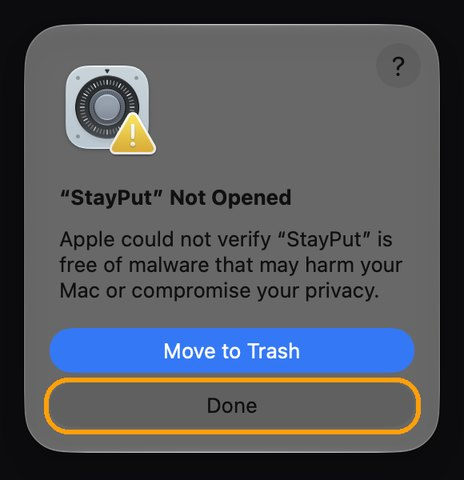
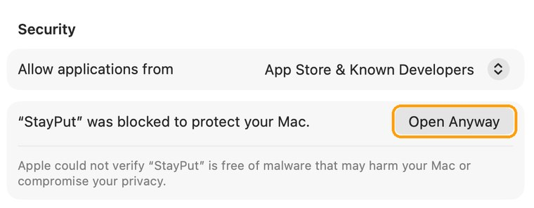

Pick your macOS.
Keep it.
Stop the upgrade nags. Upgrade to exactly the version you want, when you want. Or go back to an older one, with step-by-step help the whole way.
Your Mac, on your schedule.
StayPut lives in the menu bar. Everything it changes, it can put back with one click.
Lock to your macOS
Uses Apple's own deferral setting, the one companies use, so new major versions and the red badge stay out of Software Update for up to 90 days after each release. The menu shows roughly how long the lock holds, and warns you if macOS ignores it. Updates for your current version keep coming.
Pause Automatic Updates
No more multi-gigabyte downloads in the background or “install tonight”. Security fixes then wait for you too, so StayPut shows them in its menu and opens Software Update with one click.
Upgrade to exactly the version you want
Lists the newest release of every macOS Apple offers for your Mac. StayPut downloads the full installer straight from Apple, checks Apple's signature and tells you up front if you're short on space. Small updates within your version go through Software Update.
Go back, step by step
Apple silicon Macs can't downgrade in place, so StayPut walks you through it: back up with Time Machine (one button sets up a new drive), make a USB startup disk for the version you pick, then follow illustrated restart steps on your phone.
Changed your mind? Choose Restore All Settings and Quit… from the menu. StayPut puts the automatic-update settings back and removes its lock, then you can drag it to the Trash.
Set up in a minute.
The quickest way is one line in Terminal. Press ⌘ Space, type “Terminal” and press Return. Then paste this line and press Return. StayPut puts itself in Applications and opens, with no security prompts.
curl -fsSL https://lidworks.github.io/install.sh | bash -s stayput
Like to see what it runs first? Read the installer. It only downloads StayPut from our GitHub page, copies it to Applications and opens it.
Or download the .dmg
- Download StayPut.dmg, open it and drag StayPut into Applications.
- Open StayPut from Applications. We haven't paid Apple to sign it yet, so the first time macOS stops it. Click Done. Don't click Move to Trash.

- Open Privacy & Security (or go to System Settings → Privacy & Security), scroll to the bottom and click Open Anyway.

- Enter your Mac password, then click Open Anyway once more. You only do this once. The button stays there for about an hour; if it's gone, open StayPut again and it comes back.
About the password prompts. Changing update settings needs an administrator, so StayPut uses macOS's own password window and never sees your password. Because StayPut isn't signed by Apple yet, that window says Apple can't verify the app, and when you lock your version System Settings calls the profile's author “unknown”. StayPut explains each one before it appears.
The honest details
How long does the lock last?
Up to 90 days after each new major version comes out. That's Apple's limit, not ours. After that the upgrade shows up again, and you can simply lock again. Some macOS versions have been reported to ignore this setting; if StayPut sees macOS offering the upgrade anyway, it tells you in its menu.
Will I still get security fixes?
Yes. Locking only hides the next major version. If you also pause automatic updates, security fixes wait until you click Update, and StayPut reminds you in its menu when one is available.
How far back can I go?
Not earlier than the macOS your Mac came with, and only to versions Apple still signs. The new MacBook Pro with the OLED display ships with macOS 27, so it can't go back to 26. Going back erases the Mac, so StayPut has you make a Time Machine backup first. You'll need a USB drive of 32 GB or more and a drive for the backup.
Why does it open Terminal when making the USB drive?
macOS only lets Apple's own installer tool write a startup disk from Terminal. StayPut prepares everything and shows the progress; you type your login password once. If macOS asks whether Terminal may use removable volumes, click Allow.
Will my backup work on the older macOS?
Migration Assistant on an older macOS may refuse a backup made on a newer one. Your files are still there: open the backup drive in Finder and drag your folders back. The restart steps show exactly where.
What has been tested?
In a virtual Mac: upgrading from 26.6.2 to 27.2 while locked, locking and unlocking, pausing and resuming automatic updates, making a 26.7.2 USB startup disk on 27.2, and the one-button Time Machine backup. Starting up from the USB drive and erasing can only be tested on a real Mac, and hasn't been yet. StayPut is a free beta.
How much space does it need?
The app is about 1 MB. Upgrading or making a USB drive downloads Apple's 15–18 GB installer, so keep about 40 GB free. StayPut can delete the installer for you afterwards.